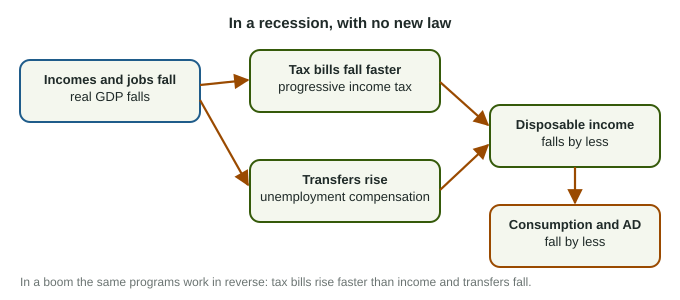

Automatic Stabilizers
Automatic stabilizers are tax and transfer rules that respond to the business cycle by themselves.
Part 1 · Hook
Why this matters
Part 2 · Before you start
What this builds on
Part 3 · Prerequisite check
Quick check before you start
1. Which of the following is a transfer payment?
- A pension paid by the government
- A government purchase of trucks
- A teacher's salary
- A sales tax
Show the answer
A transfer is money paid to households with no good or service in return.
- Correct: A pension paid by the government:
- A government purchase of trucks:
- A teacher's salary:
- A sales tax:
2. What does a tax cut do to disposable income and consumption?
- Raises both
- Lowers both
- Raises disposable income only
- Changes neither
Show the answer
Lower taxes raise disposable income, and households spend the MPC share of it.
- Correct: Raises both:
- Lowers both:
- Raises disposable income only:
- Changes neither:
3. In the business cycle, what is a contraction?
- A period when real GDP falls
- A period when real GDP rises
- The highest point of the cycle
- A rise in the price level
Show the answer
A contraction is the phase of falling real GDP, from a peak to a trough.
- Correct: A period when real GDP falls:
- A period when real GDP rises:
- The highest point of the cycle:
- A rise in the price level:
Part 4 · See it
See it first

Part 5 · Step by step
How it works, step by step
- A recession lowers incomes and jobsprogressive tax bills fall faster than income and unemployment compensation rises
- Taxes fall and transfers risedisposable income falls by less than income
- Disposable income falls by lessconsumption and AD fall by less
- AD falls by lessthe recession is milder, though a gap can remain
Part 6 · Key ideas
Key ideas
- Automatic stabilizers are taxes and transfers that change with the business cycle with no new law: the progressive tax on income and unemployment compensation are the main ones.
- In a recession they keep disposable income, consumption and AD from falling as much; in a boom they slow the rise.
- They act at once, with no wait for a decision, unlike discretionary fiscal policy.
- They soften the cycle; they do not close a gap, and they are not the long-run self-adjustment mechanism (that is wages and SRAS).
Part 7 · Misconception
A common mistake
The wrong idea: Automatic stabilizers are what return the economy to full employment in the long run.
What actually happens: They only make the fall in AD smaller. The long-run return to full employment comes from nominal wages and input prices adjusting, which shifts SRAS.
Part 8 · Check yourself
Check yourself
Exam-style questions. Anything you miss goes into your review queue.
Scenario
A recession in Country N
Country N is an invented country. Over one year of recession, its unemployment rate rises from 5% to 8%. With no new law passed, payments of unemployment compensation rise from 10 billion to 25 billion dollars, and income tax collections fall from 300 billion to 270 billion dollars as incomes shrink.
1. In Country N, why did unemployment compensation rise from 10 billion to 25 billion dollars with no new law?
- The government voted to raise benefits to fight the recession
- Workers who kept their jobs received pay raises
- More people qualified under the existing rules
- Firms paid more to the program because their profits rose
Show the answer
Eligibility is set in advance, so payments rise automatically as unemployment rises: an automatic stabilizer.
- The government voted to raise benefits to fight the recession: The scenario says no new law was passed. The rise is automatic.
- Workers who kept their jobs received pay raises: Unemployment compensation goes to people who lost jobs, not to employed workers.
- Correct: More people qualified under the existing rules: Right: the program pays whoever qualifies, so payments rise by themselves when unemployment rises.
- Firms paid more to the program because their profits rose: Profits fall in a recession, and the rise is in payments to the unemployed.
2. In Country N, what is the effect of the rise in unemployment compensation and the fall in taxes on aggregate demand?
- AD rises, ending the recession
- AD falls by more, because the government pays more out
- AD is unaffected, because the changes happened without a new law
- AD falls by less than it would have
Show the answer
Higher transfers and lower taxes keep disposable income from falling as far, so consumption and AD fall by less than without them.
- AD rises, ending the recession: The stabilizers soften the fall; they do not reverse it or close the gap.
- AD falls by more, because the government pays more out: Payments to households support their spending, so AD falls by less.
- AD is unaffected, because the changes happened without a new law: Automatic or not, more income for households supports consumption and AD.
- Correct: AD falls by less than it would have: Right: the stabilizers cushion household spending, so the fall in AD is smaller.
3. Calculate the percent change in Country N's income tax collections over the year.
Type a number (%). A four-function calculator is allowed, as on the exam.
Show the answer
- Answer: -10 %
4. Which of the following are automatic stabilizers? Select all that apply.
- Unemployment compensation paid under existing rules
- A progressive income tax
- A new law that cuts tax rates for one year to fight a recession
- A bill that funds new bridges during a recession
- Food aid for low-income families whose eligibility depends on income
- Falling nominal wages during a recession
Show the answer
Automatic stabilizers are taxes and transfers that respond to the business cycle by themselves; a new law is discretionary.
- Correct: Unemployment compensation paid under existing rules: Right: payments rise and fall with unemployment by themselves.
- Correct: A progressive income tax: Right: collections rise and fall faster than income with no new law.
- A new law that cuts tax rates for one year to fight a recession: A deliberate new law is discretionary fiscal policy.
- A bill that funds new bridges during a recession: A new spending decision is discretionary, not automatic.
- Correct: Food aid for low-income families whose eligibility depends on income: Right: more families qualify when incomes fall, so payments rise by themselves.
- Falling nominal wages during a recession: That is the economy's self-adjustment through SRAS, not a government program.
5. What is an automatic stabilizer?
- A tax or transfer that moves with the cycle on its own
- A new spending bill passed quickly during a recession
- The fall in nominal wages that shifts SRAS right in a recession
- A rule that holds the price level steady from year to year
Show the answer
Automatic stabilizers, such as progressive income taxes and unemployment compensation, respond to the cycle by themselves.
- Correct: A tax or transfer that moves with the cycle on its own: Right: it softens swings in disposable income and spending by itself.
- A new spending bill passed quickly during a recession: A new bill is discretionary fiscal policy, however fast it passes.
- The fall in nominal wages that shifts SRAS right in a recession: That is long-run self-adjustment, which works through wages and SRAS.
- A rule that holds the price level steady from year to year: Automatic stabilizers work through taxes and transfers, not through a price rule.
6. A student says: "In a recession, automatic stabilizers push SRAS right and bring output back to full employment." What is wrong?
- Nothing: automatic stabilizers are the self-adjustment mechanism
- They push SRAS left, not right
- They make the recession deeper, so output falls further
- They soften the fall in AD; wages and SRAS do the long-run work
Show the answer
Automatic stabilizers reduce the swing in AD; they do not close the gap. The long-run return to full employment comes from wages and SRAS.
- Nothing: automatic stabilizers are the self-adjustment mechanism: Readers mark this wrong. Self-adjustment works through nominal wages and SRAS, not through taxes and transfers.
- They push SRAS left, not right: They do not act on SRAS at all; they act on disposable income and AD.
- They make the recession deeper, so output falls further: They make it milder, by keeping disposable income and spending from falling as much.
- Correct: They soften the fall in AD; wages and SRAS do the long-run work: Right: stabilizers cushion spending, while self-adjustment is falling wages shifting SRAS.
Part 9 · Summary
Summary
Part 10 · Up next
What comes next
Part 11 · Connections